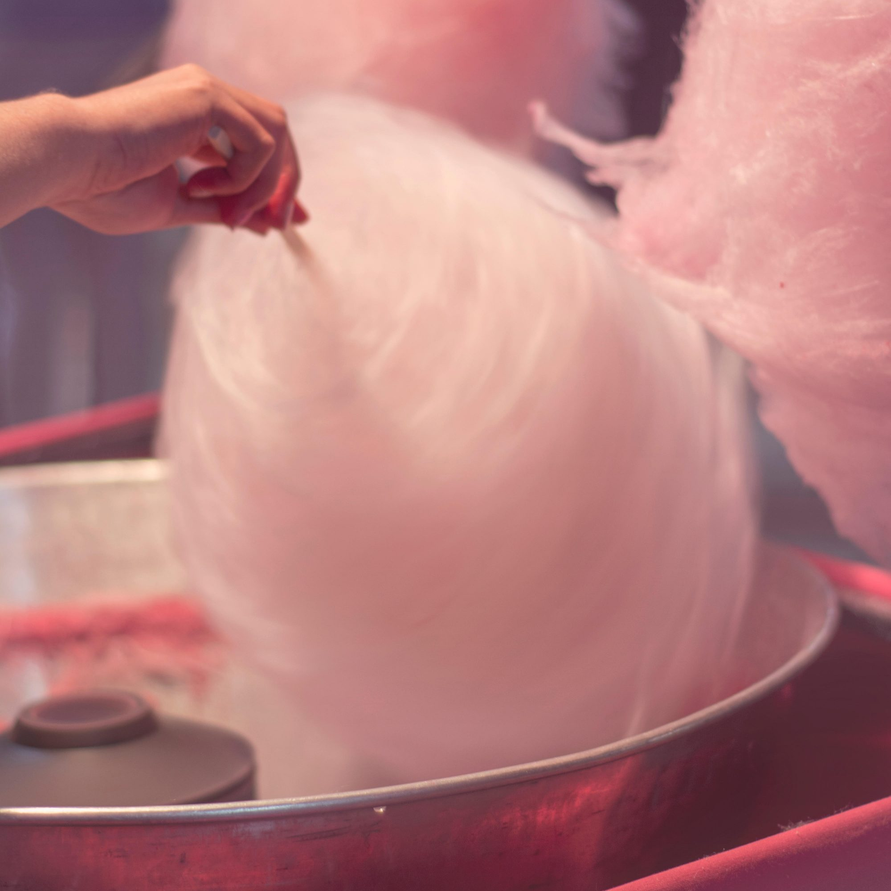

Is a spun sugar confection that resembles cotton. It contains small amounts of flavouring such as vanilla or food colouring. It's made by heating and liquifeying sugar and spinning it cenitrigally through minut holes causing it to rapidly cool and re-solidy into fine strands. It is often sold by fairs, stores, carnivals and amusement oarks served in a plastic bag, on a wooden stick and or on a paper cone. Candy floss made and sold internationally as candy floss in the United Kingdom, Ireland, Egypt, India, New Zealand and many more countries with different names for candy floss are Cotton Candy in the United States of America and Canada and Fairy Floss in Australia.
Candy floss turns out that the ingredients for this delightful treat and remarkably simple - it is usally made entriely of sugar!; How it's possibly sugar turns into a luminious and fluffy treat that creates candy floss or cotton candy. The sugar made by heating andf liquefying sugar; spinning it through minute holes- by which the sugar rapidly cools and re-solidfies into fine strands. If you catch it quickly enough and connect it to the next threads, you will obyain an ideal portion of candy floss.